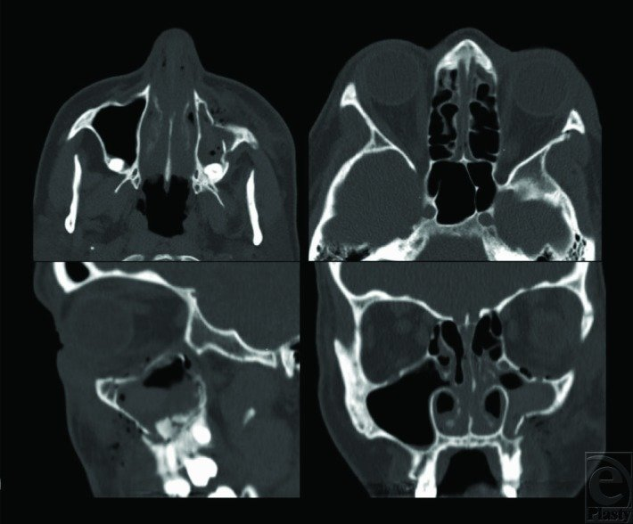
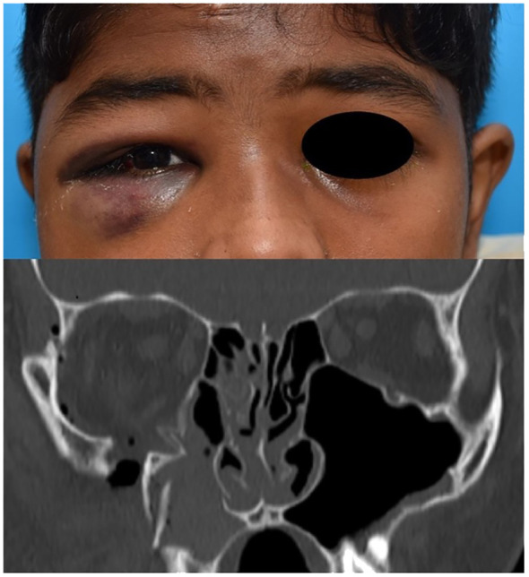
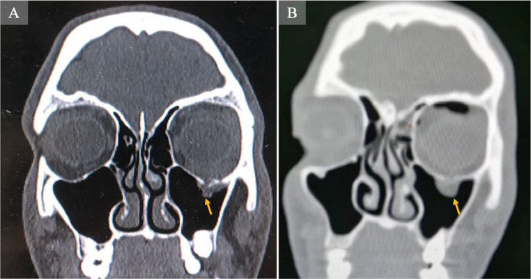
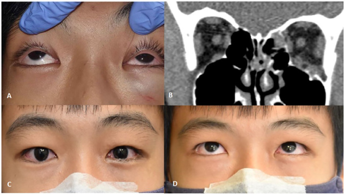

1716 — Gãy phức hợp gò má–hàm trên (ZMC) ở trẻ: bốn trụ đỡ, phân độ Zingg, ngưỡng di lệch và khi nào mổ
Tags: pattern:gay-xuong pattern:mat-loi-go-ma pattern:di-lech-trong pattern:trapdoor-o-mat pattern:teardrop vung:go-ma vung:so-mat vung:hoc-mat vung:xoang-ham anatomy:bon-tru-do protocol:CT-lat-mong protocol:coronal protocol:CT-3D score:Zingg score:do-di-lech-mm score:the-tich-o-mat protocol:ORIF
Mức chắc chắn (certainty): tổng hợp y văn (literature synthesis) — ghép 98 trẻ ≤ 17 tuổi gãy xương mặt (J Clin Med 2025, PMC12786729), 43 trẻ gãy ổ mắt được mổ (Front Ophthalmol 2025, PMC11965933), 207 ca vỡ sàn ổ mắt, 26 ca bỏ sót (Med Oral Patol Oral Cir Bucal 2024, PMC11365048), 51 trẻ gãy thành ổ mắt, đa trung tâm châu Âu (Eur J Trauma Emerg Surg 2026, PMC13668967), 127 ca đo thể tích ổ mắt (J Clin Med 2024, PMC11204536), 272 ca gãy gò má theo Zingg (J Dent Sci 2026, PMC12825491), tổng quan ngưỡng hình thái ZMC (Craniomaxillofac Trauma Reconstr 2025, PMC12731674), 54 nghiên cứu vật liệu tái tạo ổ mắt trẻ (Craniomaxillofac Trauma Reconstr 2026, PMC13024892) và 2 ca nguyên văn (Eplasty 2014, PMC4145677; Radiol Case Rep 2025, PMC11785544). Không có ca do nhóm tự chụp.
Câu hỏi thực hành: bé 12 tuổi ngã xe đạp, sưng quanh ổ mắt phải, tê môi trên phải, há miệng chỉ được 25 mm; CT sọ "bình thường" theo báo cáo cấp cứu. Hoặc bé 15 tuổi bị đấm vào mắt, KHÔNG sưng, KHÔNG bầm, chỉ nhìn đôi khi ngước lên và buồn nôn. Hoặc bé 8 tuổi ngã cầu thang, CT có đường gãy qua gò má phải + xoang hàm mờ. Ba quyết định của bài: (1) đọc đủ 4 trụ đỡ trên CT lát mỏng có coronal — gãy ZMC bị bỏ sót ở trẻ nhiều gấp ~9 lần người lớn; (2) đo 5 con số (di lệch ngang/dọc, chênh sàn ổ mắt, lõm cung, thay đổi thể tích ổ mắt) để biết có cần mổ; (3) phân biệt "gãy ZMC thường" với trapdoor sàn ổ mắt — thể thứ hai là cấp cứu trong 24–48 giờ dù phim trông rất nhẹ.
1. Tổng quan bệnh học – cơ chế hình ảnh: vì sao gò má "sập" và vì sao trẻ dễ bỏ sót
1.1. Bốn trụ đỡ quyết định tên gọi và kiểu gãy
- Gò má là xương dày nhất của tầng giữa mặt, nhưng nó chỉ nối với phần còn lại qua 4 khớp mỏng: (1) trán–gò má (frontozygomatic), (2) gò má–hàm trên (zygomaticomaxillary buttress), (3) cung gò má–thái dương (zygomaticotemporal), (4) gò má–bướm (zygomaticosphenoid).
- TẠI SAO đường gãy luôn chạy qua khớp: lực tác động vào thân gò má (khối xương cứng) sẽ truyền ra 4 khớp mỏng và làm đứt lần lượt các khớp đó — vì vậy Zingg type B = đứt cả 4 khớp là kiểu hay gặp nhất (51,8% trong 272 ca; J Dent Sci 2026, PMC12825491). Gãy type A chỉ ở một vị trí: A1 = cung gò má, A2 = bờ ngoài ổ mắt, A3 = bờ dưới ổ mắt; type C = vỡ vụn (cùng bài).
- TẠI SAO gò má trông "sập" (mất lồi má): thân gò má xoay quanh trục cung ra sau–vào trong; đỉnh gò má (malar eminence) tụt xuống và ra sau. Trên CT, đo khoảng cách từ thành ngoài gò má tới đường giữa so với bên lành, hoặc chiều cao gò má–gò má (intermalar height) — chênh > 4–5 mm ngang hoặc > 2–3 mm dọc thường đủ gây bất đối xứng thấy được (Craniomaxillofac Trauma Reconstr 2025, PMC12731674).
- TẠI SAO gãy ZMC kéo theo ổ mắt: gò má tạo thành ngoài + một phần sàn ổ mắt. Khi gò má tụt xuống, sàn ổ mắt hạ theo → thể tích ổ mắt tăng → nhãn cầu tụt ra sau (enophthalmos) và lệch xuống (hypoglobus); ngưỡng được dùng trong thực hành là bất đối xứng thể tích > 5% (PMC12731674). Thể tích ổ mắt tăng theo tuổi (127 ca, p = 0,022; J Clin Med 2024, PMC11204536) — nghĩa là trẻ nhỏ chịu lực tốt hơn nhưng cũng dễ có kiểu gãy "bật lò xo" hơn.
1.2. Vì sao trẻ khác người lớn (cơ học xương đang lớn)
- Trẻ có tỉ lệ sọ:mặt lớn, xương đàn hồi, vỏ xương mỏng, nhiều mô mỡ đệm → gãy xương mặt hiếm hơn (chỉ 1–15% tổng số gãy xương mặt) và khi gãy thường greenstick/không di lệch (J Clin Med 2025, PMC12786729).
- TẠI SAO trẻ dễ trapdoor: xương đàn hồi mở ra rồi bật lại như cánh cửa lò xo, kẹp cơ thẳng dưới/mô mỡ vào đường gãy. Kẹt cơ → thiếu máu cơ → xơ hóa và hạn chế vận nhãn vĩnh viễn nếu không giải phóng sớm; đồng thời kích thích phản xạ ổ mắt–tim (oculocardiac reflex) gây mạch chậm, buồn nôn, nôn.
- TẠI SAO trẻ dễ bị bỏ sót: thiếu dấu hiệu ngoài ("white-eyed blowout"), không phù nề, trẻ không hợp tác khám vận nhãn, và bác sĩ đọc CT sọ chỉ tập trung não. Trong 207 ca vỡ sàn ổ mắt được mổ: 13% (26/207) bị bỏ sót lần khám đầu, trong đó 40% ở người < 18 tuổi so với 10% ở người ≥ 18 tuổi (aOR 9,3; KTC 2,4–35); 62% ca bỏ sót có khám mắt không đủ, 50% do đọc sai CT (Med Oral Patol Oral Cir Bucal 2024, PMC11365048).
1.3. Dịch tễ – định lượng
- Gãy gò má chiếm ~25% chấn thương xương mặt và là gãy tầng giữa mặt phổ biến thứ hai; > 70% được mổ (Front Oral Health 2025, PMC12546370).
- Trong 272 ca gãy gò má: type B 51,8%; 29,4% có chấn thương sọ não đi kèm; gãy hai bên 8,8% và nhóm hai bên có sọ não 58,3% so với 26,6% (p < 0,05); ở người < 60 tuổi, type A có OR 2,38 cho sọ não (J Dent Sci 2026, PMC12825491).
- Trong 98 trẻ ≤ 17 tuổi (tuổi trung bình 12): sàn ổ mắt 33,7%, gò má 16,3%, hàm dưới 24,5%, mỏm lồi cầu 16,3%; mổ 76,5%; chấn thương thần kinh trung ương 32,7%; tháo nẹp 19 ca sau ~3 tháng (J Clin Med 2025, PMC12786729).
- Trong 43 trẻ gãy ổ mắt được mổ: 25,6% là gãy phức hợp sọ–mặt, và ZMC là loại phức hợp hay nhất (45,4%); kẹt mô 56%, 53% mổ trong 24 giờ đầu (Front Ophthalmol 2025, PMC11965933).
- Trong 51 trẻ gãy thành ổ mắt (tuổi trung bình 12,1; 84,3% sàn đơn thuần): nhìn đôi 84,3%; 68,6% mổ trong 2 ngày; sau 6 tháng còn 11,8% di chứng — nhìn đôi 5,9%, tê thần kinh dưới ổ mắt 3,9%, enophthalmos 3,9% (Eur J Trauma Emerg Surg 2026, PMC13668967).
2. Mẫu hình + chẩn đoán phân biệt theo vị trí và theo tuổi (Gamut)
2.1. Gamut theo phân độ Zingg (chọn theo số khớp bị đứt)
- Type A1 — chỉ cung gò má: lõm cung, há miệng hạn chế do mỏm vẹt chạm cung; thân gò má còn đúng vị trí. Gãy cung "hình chữ V" là kiểu hay gặp; chỉ cần mổ khi hạn chế há nặng dù di lệch nhỏ.
- Type A2 — chỉ khớp trán–gò má: bờ ngoài ổ mắt bậc thang, thường kèm rách mi trên; dễ đọc nhầm "bình thường" trên lát cắt ngang nếu không dựng coronal.
- Type A3 — chỉ bờ dưới ổ mắt: bậc thang bờ dưới, tê má/môi trên, có thể kèm vỡ sàn.
- Type B — đứt cả 4 khớp (kiểu phổ biến nhất): mất lồi má + hạ bờ dưới ổ mắt + sập sàn + trismus; đây là kiểu cần đo đủ 5 chỉ số và quyết định mổ.
- Type C — vỡ vụn: nhiều mảnh, mất mặt khớp, khó tái lập độ lồi; thường do lực lớn (tai nạn giao thông), hay kèm chấn thương sọ.
2.2. Gamut theo tuổi và cơ chế
- < 5 tuổi: gãy xương mặt rất hiếm; nếu có thường greenstick, không di lệch, hay bỏ sót; ưu tiên theo dõi + ăn mềm.
- 6–12 tuổi: ngã, xe đạp, thể thao; gãy khớp + sàn ổ mắt; mầm răng vĩnh viễn còn trong xương hàm trên → cố định phải tránh chân răng/mầm răng.
- 13–18 tuổi: ẩu đả, thể thao, xe máy; kiểu type B/C như người lớn nhưng tái tạo nhanh và còn trung tâm tăng trưởng.
2.3. Gamut "bắt chước" (đọc sai là mổ oan hoặc bỏ sót)
- Vỡ sàn ổ mắt đơn thuần (blow-out): bờ ổ mắt còn liền, chỉ sàn/mặt trong vỡ; không mất lồi má.
- Trapdoor sàn ổ mắt: đường gãy khe hở hẹp, bờ liền, cơ kẹt; phim trông rất nhẹ — thể dễ bỏ sót nhất.
- NOE (mũi–ổ mắt–sàng): gãy dây chằng góc trong (medial canthal tendon), telecanthus, không có mất lồi gò má.
- Le Fort II/III: gãy cả tầng giữa, di lệch hàm trên + mũi, không khu trú ở gò má.
- Hội chứng xoang im lặng (silent sinus syndrome): xoang hàm xẹp dần, mờ, enophthalmos + hypoglobus, KHÔNG chấn thương, KHÔNG đường gãy (đã báo ở trẻ; Cureus 2026, PMC13200221).
- Di lệch khớp do tăng trưởng/không đối xứng: trẻ có bất đối xứng nhẹ sẵn có; luôn so bên lành và so phim cũ.
Gợi nhớ 3 dấu hiệu lâm sàng của ZMC: mất lồi má (Malar flattening) – tê môi trên/má (Maxillary nerve) – hạn chế há (Mouth opening). Thiếu cả 3 không loại trừ ZMC.
3. Bảng so sánh phân biệt (ma trận đối chiếu)
| Thực thể (entity) | Hình ảnh điển hình | Chốt vào (rule-in) | Chốt loại (rule-out) | Gợi ý xác nhận |
|---|---|---|---|---|
| ZMC type B (đứt 4 khớp) | Đường gãy qua khớp trán–gò má + bờ dưới ổ mắt + trụ gò má–hàm trên + cung; thân gò má xoay vào trong–ra sau; sàn ổ mắt hạ | ≥ 3 trong 4 khớp có bậc thang/di lệch + mất lồi má | Bờ ổ mắt liền, chỉ cung gãy → type A1 | CT ≤ 1 mm + coronal + 3D; đo intermalar height |
| ZMC type A1 (cung đơn thuần) | Cung gò má lõm hình chữ V, thân gò má còn đúng chỗ | Lõm cung > 3 mm + hạn chế há (mỏm vẹt chạm cung) | Có bậc thang ở khớp trán–gò má → không phải A1 | Lát cắt ngang qua cung + hỏi há miệng |
| Type A2/A3 (một bờ ổ mắt) | Bậc thang bờ ngoài hoặc bờ dưới ổ mắt, các khớp khác liền | Bậc thang khu trú một bờ + đau chói tại chỗ | Di lệch lan 4 khớp → type B | Coronal + đo bậc thang (mm) |
| Vỡ sàn ổ mắt đơn thuần | Khuyết sàn, mỡ/cơ sa vào xoang hàm, dấu giọt lệ (tear-drop), bờ ổ mắt liền | Thể tích ổ mắt tăng, khuyết sàn ≥ 5–10 mm hoặc sau trục nhãn cầu | Bờ ổ mắt gãy + mất lồi má → ZMC | Coronal cửa sổ mô mềm; đo thể tích |
| Trapdoor sàn ổ mắt (trẻ) | Khe gãy hẹp, bờ liền, cơ thẳng dưới kẹt, giọt lệ; không phù nề ngoài | Hạn chế ngước + đau khi vận nhãn + buồn nôn/nhịp chậm | Phù nề nhiều, không hạn chế vận nhãn → theo dõi | Coronal mô mềm; khám vận nhãn bắt buộc |
| NOE | Gãy xương mũi + mỏm trán hàm trên + thành trong ổ mắt, telecanthus | Telecanthus + dấu "bài kiểm tra dây chằng góc trong" dương | Không telecanthus, không tổn thương thành trong → không phải NOE | CT + khám góc mắt trong |
| Le Fort II/III | Đường gãy chéo qua mũi–hàm trên–gò má hoặc qua gò má–mũi, di lệch cả khối hàm trên | Di lệch khối hàm trên + cắn hở/khớp cắn lệch | Di lệch chỉ khu trú gò má → ZMC | CT 3D toàn khối mặt; khám khớp cắn |
| Hội chứng xoang im lặng | Xoang hàm mờ/xẹp, thành xoang cong vào trong, enophthalmos, không đường gãy | Xẹp xoang tiến triển + không chấn thương | Có đường gãy/di lệch xương → chấn thương | So phim cũ; MRI/CT theo dõi |

Bốn bình diện trước mổ (người lớn 43 tuổi, ngã đập mặt): thân gò má trái mất độ lồi, di lệch tại khớp gò má–bướm và trụ gò má–hàm trên; sàn ổ mắt chỉ di lệch tối thiểu. Nguồn: Eplasty 2014 (PMC4145677), CC BY 2.0 — ảnh nguyên bản, không crop.3.1. Dấu hiệu chốt trên từng bình diện
- Axial: cung gò má (lõm/V), thành ngoài ổ mắt, khớp gò má–bướm (khớp này là "chìa khóa" của việc nắn đúng — nếu khớp bướm còn liền thì gò má ít xoay).
- Coronal: bờ dưới ổ mắt + sàn + trụ gò má–hàm trên; đây là bình diện bắt buộc — thiếu coronal là lý do hay gặp nhất khiến bỏ sót sàn ổ mắt.
- Sagittal: độ lồi gò má so với bên lành, độ sâu xoang hàm.
- 3D VR: dùng để giải thích cho gia đình và lập kế hoạch nắn, không thay lát mỏng.
4. Protocol chụp + phân độ & thuật toán điều trị
4.1. Protocol
- CT xương mặt, lát ≤ 1 mm, cửa sổ xương + cửa sổ mô mềm, dựng axial + coronal + sagittal + 3D VR; ở trẻ giảm liều theo cân nặng (ALARA — xem bài 010/9420).
- Bắt buộc thêm coronal mô mềm khi nghi trapdoor/kẹt cơ: cửa sổ xương cho thấy đường gãy nhưng chỉ cửa sổ mô mềm mới thấy cơ thẳng dưới dày, kéo, hoặc giọt lệ.
- Không cần MRI thường quy; MRI chỉ khi nghi tổn thương thần kinh thị, dây chằng góc trong, hoặc đĩa khớp.
- CBCT thay thế được khi câu hỏi thuần xương và bệnh nhi hợp tác (liều thấp hơn), nhưng không đánh giá mô mềm.
4.2. Năm con số phải đo (báo cáo bằng mm/%)
| Chỉ số | Cách đo | Ngưỡng hành động |
|---|---|---|
| Di lệch ngang thân gò má | Khoảng cách thành ngoài gò má → đường giữa, so bên lành | > 4–5 mm → cân nhắc mổ |
| Di lệch dọc (tụt gò má) | Chênh chiều cao điểm thấp nhất gò má hai bên | > 2–3 mm → bất đối xứng rõ |
| Chênh sàn ổ mắt | Chênh độ cao sàn hai bên tại cùng lát coronal | > 2 mm → nguy cơ nhìn đôi/enophthalmos |
| Lõm cung gò má | Độ lõm sâu nhất của cung so đường nối hai đầu | > 3 mm → hạn chế há, thường phải can thiệp |
| Bất đối xứng thể tích ổ mắt | Phân đoạn tự động hoặc vẽ tay từng lát | > 5% → nguy cơ cơ năng/thẩm mỹ |
Nguồn ngưỡng: Craniomaxillofac Trauma Reconstr 2025 (PMC12731674) — tác giả ghi rõ đây là ngưỡng từ cohort hồi cứu, chưa có thử nghiệm ngẫu nhiên.
4.3. Chỉ định mổ — phân biệt "gãy ZMC" và "tổn thương sàn ổ mắt"
- Mổ nắn–cố định ZMC khi có: di lệch thấy được/bất đối xứng > 4–5 mm, hạn chế há do cung chèn mỏm vẹt, di lệch gây cản trở cơ học, hoặc gãy không vững (unstable) sau khi nắn thử (Eplasty 2014, PMC4145677; PMC12731674).
- Thăm dò–vá sàn ổ mắt khi có một trong các: kẹt cơ với hạn chế ngước, sàn vỡ vụn, enophthalmos > 2 mm, khuyết sàn nằm sau trục nhãn cầu, khuyết sàn 5–10 mm trên CT (Eplasty 2014, PMC4145677).
- Thời điểm: nắn ZMC thường trong 7–14 ngày (sau khi hết phù cấp, trước khi xương liền) (PMC12731674); kẹt cơ/trapdoor là ngoại lệ — mổ sớm, thực tế 53% trẻ được mổ trong 24 giờ (PMC11965933) và 68,6% trong 2 ngày (PMC13668967). Ca trapdoor nguyên văn được giải phóng cơ sau 8 giờ (PMC11785544).
- Cố định: 1 điểm (chỉ trụ gò má–hàm trên) cho di lệch nhẹ; 2–3 điểm (thêm bờ dưới ổ mắt, khớp trán–gò má) cho type B/C; khớp gò má–bướm là mốc kiểm tra nắn đúng.
- Vật liệu ở trẻ: ưu tiên nẹp/vít tiêu (resorbable) khi mổ để tránh can thiệp lần hai và giảm ảnh hưởng tăng trưởng (Eur Arch Paediatr Dent 2026, PMC13331832); trong loạt 43 trẻ, 64,3% implant là tiêu (PMC11965933). Tổng quan 54 nghiên cứu (562 bệnh nhân) không có thử nghiệm ngẫu nhiên, bằng chứng chủ yếu hồi cứu (PMC13024892). Nếu dùng titanium, loạt 98 trẻ tháo nẹp 19 ca sau ~3 tháng vì lý do tăng trưởng (PMC12786729).
- Theo dõi: khám lại 1 tuần, 1 tháng, 3 tháng, sau đó theo tuổi đến khi hết tăng trưởng; đánh giá khớp cắn, há miệng, vận nhãn, độ lồi má, cân nhắc chỉnh nha (PMC13331832).
4.4. Thuật toán
flowchart TD
A[Chấn thương mặt ở trẻ + nghi gò má] --> B[CT ≤1 mm: axial + coronal + 3D + cửa sổ mô mềm]
B --> C{Có kẹt cơ, hạn chế ngước, buồn nôn/nhịp chậm?}
C -->|Có| D[Trapdoor: mổ giải phóng trong 24–48 giờ]
C -->|Không| E[Đo 5 chỉ số: ngang, dọc, sàn, cung, thể tích]
E --> F{Di lệch > 4–5 mm hoặc cung lõm > 3 mm hoặc hạn chế há?}
F -->|Không| G[Theo dõi: ăn mềm, tránh xì mũi, khám 1–3 tháng]
F -->|Có| H[ORIF 1–3 điểm trong 7–14 ngày]
H --> I{Sàn vỡ: khuyết 5–10 mm, sau trục nhãn cầu, enophthalmos > 2 mm?}
I -->|Có| J[Vá sàn bằng implant tiêu hoặc mảnh ghép]
I -->|Không| K[Chỉ nắn–cố định ZMC]
J --> L[Theo dõi đến hết tăng trưởng]
K --> L
D --> L
G --> L
5. Biến thể bình thường và cạm bẫy
- Cạm bẫy 1 — "thỏa mãn tìm kiếm" (satisfaction of search): CT sọ chấn thương được đọc để tìm máu tụ nội sọ; gò má và sàn ổ mắt bị bỏ qua. Đây là lý do chính khiến 40% ca < 18 tuổi bị bỏ sót (PMC11365048). Cách tránh: đọc lại theo checklist 4 trụ đỡ + sàn trên coronal ở mọi CT sọ có chấn thương mặt.
- Cạm bẫy 2 — "white-eyed blowout": trẻ không sưng, không bầm, chỉ nhìn đôi khi ngước + buồn nôn; phim coronal có giọt lệ. Trong nhóm < 18 tuổi, các dấu hiệu nhìn đôi/hạn chế vận nhãn (p = 0,005), đau khi vận nhãn (p = 0,010), buồn nôn/nôn (p < 0,001), nhịp chậm (p = 0,014) phổ biến hơn người lớn, còn phù nề quanh ổ mắt ít hơn (p < 0,001) (PMC11365048).
- Cạm bẫy 3 — bỏ sót nhịp chậm: phản xạ ổ mắt–tim do kẹt cơ/căng mô có thể gây nhịp chậm và ngất; trẻ buồn nôn sau chấn thương mắt không phải "say xe".
- Cạm bẫy 4 — nhầm gãy cung với trật khớp thái dương–hàm: cả hai đều hạn chế há; gãy cung chèn mỏm vẹt, còn trật khớp có lồi cầu trước ụ khớp (bài 1707). Khám + CT coronal phân biệt.
- Cạm bẫy 5 — bậc thang giả ở khớp đang lớn: trẻ có khớp sọ mặt còn sụn, bờ khớp có thể không đều hai bên; chỉ gọi gãy khi có đường gãy cắt vỏ + phù tủy hoặc bậc thang khu trú.
- Cạm bẫy 6 — khí trong ổ mắt/xoang: sau chấn thương, xì mũi, thổi kèn, gây mê bằng mask có thể đẩy khí vào ổ mắt; dặn không xì mũi, tránh bay trong 2 tuần.
- Biến thể bình thường: cung gò má hai bên không đối xứng hoàn toàn, xoang hàm có vách ngăn, mào xương trên sàn — so bên lành và đọc đa bình diện trước khi kết luận.
6. Tự lượng giá — Blind Quiz
Ca 1 — Trẻ chấn thương mặt, sưng–bầm quanh ổ mắt phải

- Gợi ý lâm sàng: sưng–bầm quanh ổ mắt phải (ảnh lâm sàng kèm theo); không có máu tụ nội sọ. Các dấu hiệu khác (tê môi trên, hạn chế há) phải khám mới biết — không thấy trên ảnh.
- Câu hỏi: Đường gãy đi qua mấy khớp nối? Thuộc type Zingg nào? Cần đo chỉ số nào trước khi quyết định?
Bấm để hiện đáp án (findings + chẩn đoán)
- Dấu hiệu: coronal cửa sổ xương — thân gò má phải di lệch vào trong, vỡ vụn; xoang hàm phải mờ do máu.
- Chẩn đoán: gãy ZMC type B/C, di lệch — vì lực truyền qua thân gò má làm đứt các khớp mỏng; cần đo di lệch ngang (> 4–5 mm), dọc (> 2–3 mm), chênh sàn (> 2 mm), lõm cung (> 3 mm) và thể tích ổ mắt (> 5%) để quyết định ORIF.
- Nguồn ảnh: Front Ophthalmol 2025 (PMC11965933), Fig. 7 — CC BY 4.0, ảnh nguyên bản.
Ca 2 — Bé trai 15 tuổi bị đấm vào mắt trái

- Gợi ý lâm sàng: không phù nề, không bầm, đau khi vận nhãn, không ngước lên được, nhìn đôi; không có dấu hiệu phản xạ ổ mắt–tim.
- Câu hỏi: Dấu hiệu trên ảnh gọi là gì? Vì sao phim trông "nhẹ" mà vẫn phải mổ?
Bấm để hiện đáp án (findings + chẩn đoán)
- Dấu hiệu: dấu giọt lệ (tear-drop sign) — mô mềm/cơ thẳng dưới sa xuống qua khe gãy sàn ổ mắt trái, mũi tên vàng; bờ ổ mắt còn liền.
- Chẩn đoán: trapdoor sàn ổ mắt — xương trẻ đàn hồi bật lại và kẹp cơ, gây thiếu máu cơ và hạn chế vận nhãn; ca này được giải phóng cơ sau 8 giờ. Đây là cấp cứu, không chờ hết phù.
- Nguồn ảnh: Radiol Case Rep 2025 (PMC11785544), Fig. 1 — CC BY-NC-ND 4.0, ảnh nguyên bản (không crop).
Ca 3 — Trẻ hạn chế ngước mắt trái sau chấn thương

- Gợi ý lâm sàng: hạn chế ngước mắt trái + nhìn đôi, sưng nhẹ; 1 tuần sau mổ vá sàn bằng implant tiêu, vận nhãn cải thiện.
- Câu hỏi: Tổn thương nằm ở thành nào của ổ mắt? Vì sao chọn vật liệu tiêu ở trẻ?
Bấm để hiện đáp án (findings + chẩn đoán)
- Dấu hiệu: (A) hạn chế ngước mắt trái; (B) coronal cửa sổ mô mềm — gãy thành trong + sàn ổ mắt trái, cơ thẳng dưới dày và tròn lại, mô mềm phù ở sàn; (C, D) 1 tuần sau mổ, phù giảm, vận nhãn tốt hơn.
- Chẩn đoán: gãy sàn + thành trong ổ mắt có kẹt cơ (thể phức hợp), vá bằng implant tiêu — vì trẻ còn tăng trưởng, vật liệu tiêu tránh phải mổ lấy và giảm ảnh hưởng lên xương đang lớn.
- Nguồn ảnh: Front Ophthalmol 2025 (PMC11965933), Fig. 6 — CC BY 4.0, ảnh nguyên bản.
Bài liên quan chéo
- 1707 – Trật khớp thái dương–hàm ở trẻ — cùng "hạn chế há", khác cơ chế.
- 1708 – Gãy lồi cầu xương hàm dưới ở trẻ — gãy tầng dưới cùng cơ chế ngã cằm.
- 1703 – Dính khớp thái dương–hàm bẩm sinh — hạn chế há mạn, không chấn thương.
- 420 – Vỡ sàn hốc mắt & hội chứng khoang — thể chỉ có sàn, không mất lồi gò má.
- 010 – Giải phẫu ngực cắt lớp & biến thể — nguyên lý ALARA khi chụp trẻ (tham chiếu liều).
Ảnh
- Ảnh tải từ gói
supplementaryFilescủa Europe PMC, đúng file figure trong bài gốc; không crop, không kéo giãn. - Nguồn + giấy phép từng ảnh:
images/CREDITS.md.
Không dùng để chẩn đoán độc lập khi chưa có người hướng dẫn.